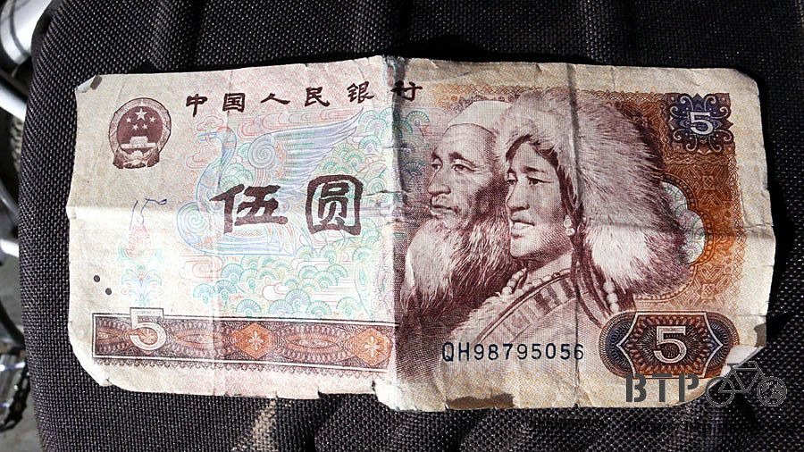
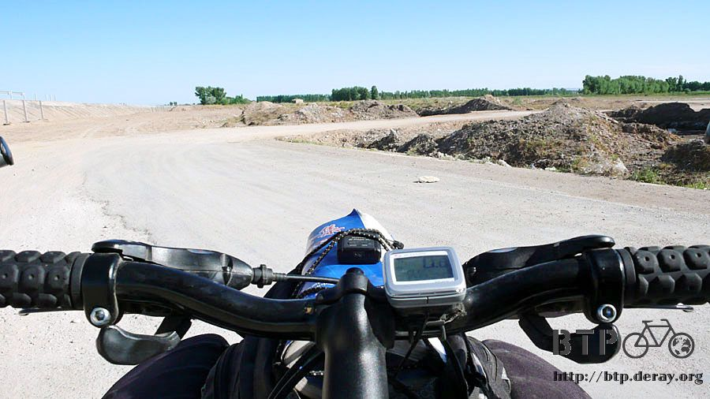
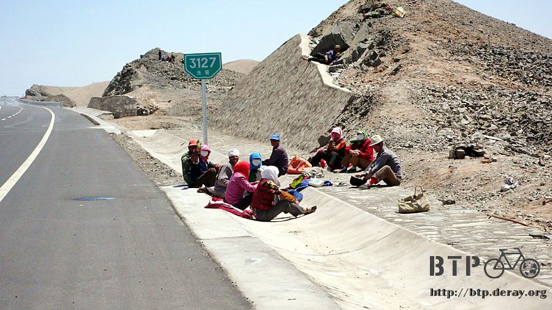
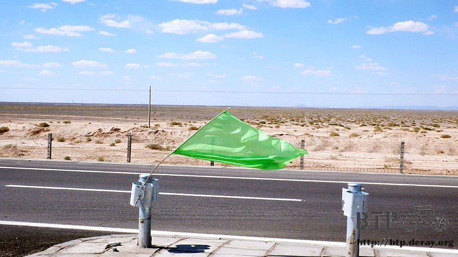
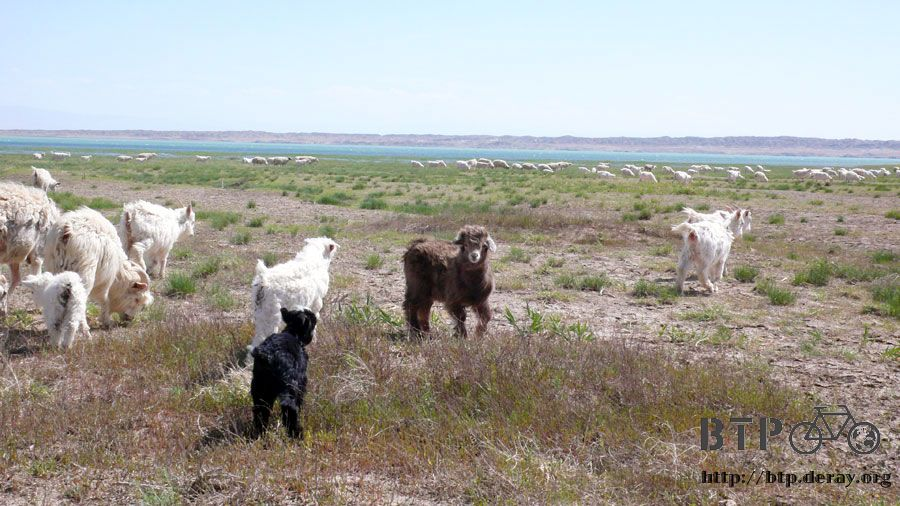
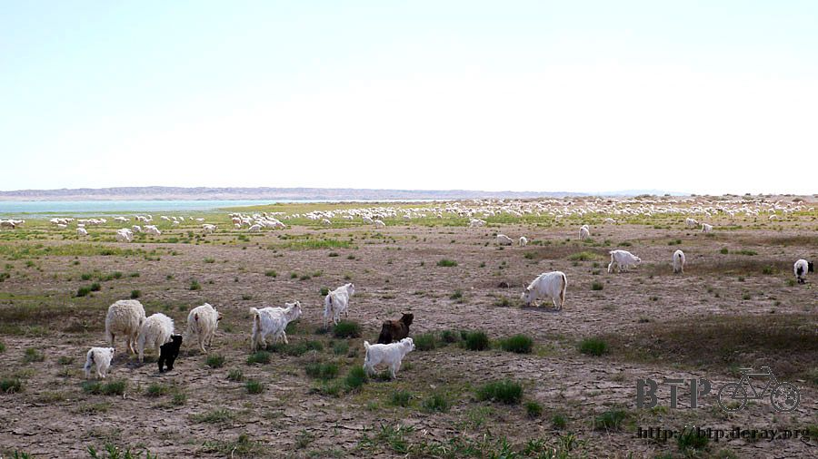
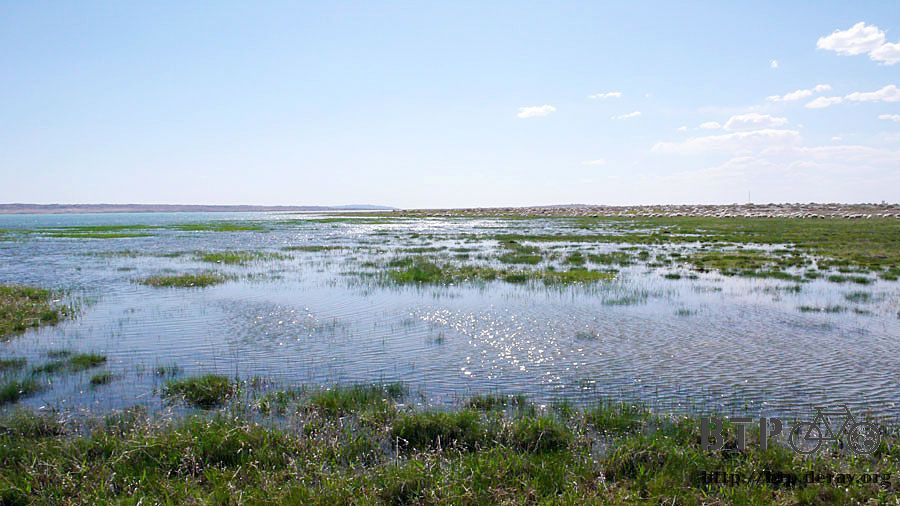
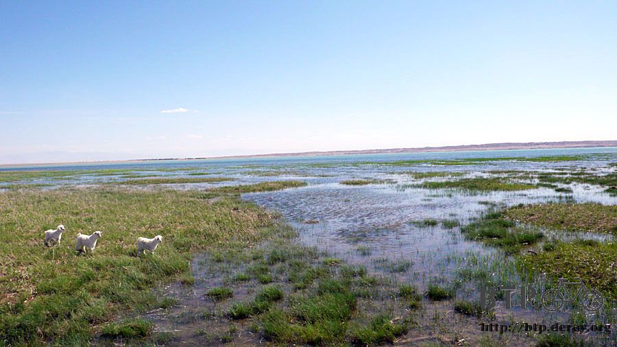
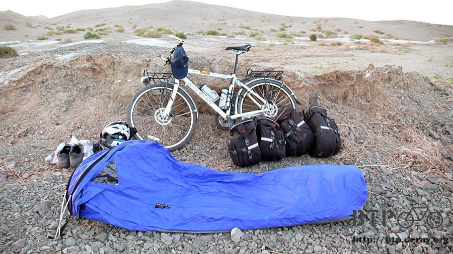
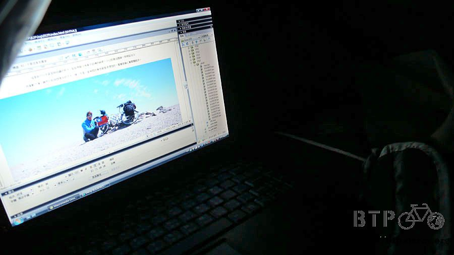

Camping with 1200 sheep
In the morning, I set off at 8 o’clock sharp.
By then the sun had become fiercely bright after sunrise. It would be a long day today
I returned to the hotel to get back the room deposit (five RMB) after riding my bike 500 meters.
I might have hesitated to go back for only five RMB if I had gone further.

My plan was to ride 135 km from Yumeng to Anxi in one day.
Today’s head wind slowed me down significantly.
If I made it today, I would get into Anxi around 8:00 or 9:00PM. Making it a two day trip would have been easier.

I was so happy to see the Route 312 re-appeared in Yumeng, which was a good sign that I might ride to Anxi without a detour.
One and half hours later, after 26 km ride, Route 312 was going to vanish again, which upset me, even though I had expected it.

While I still had the chance to get on the highway, I found an open hole in the fence where I could lift Dido up to the highway.
Carrying Dido up to the highway was very difficult because the stairs covered with gravel and sand were very slippery.
The difficulty was greater if I carried my bags and Dido all together at the same time.
I had to be extremely careful. I was out of breath when climbing up to the Lianhuo highway.

Blazing hot sun, strong head wind, and straight highway were exactly the same as yesterday, déjà vu!
The highway divided the vast desert. The tiny clouds could not hide the sun at all.
I was under the burning sun in such an arid place with no sight of trees what so ever for the entire day.

I bought 3 sticks of super thick hot dogs, 2 bags of dried beancurd,
one bag of dried fruit and one stick of sweet sesame twist in the local store for breakfast.

All the way till noon, no store, no people, and no gas stations,
finally I spotted a rest area which was under construction, and the business was not yet started.
I opened up a bag of peanuts when I failed to overcome my hunger.
I could not ride without energy, however. I only had snacks for breakfast and lunch.
Food was easier to manage, but water was a problem.
I usually got my water supply at where I ate lunch. With no store and restaurant along the way, I had to restrict my water consumption.
The plan was to drink one bottle of water every 30 km, and I had three water bottles.
However, due to today’s burning sun, water was consumed faster than I planned.
There was no way to get water in this area. Once the water was finished, I could only bike with my thirst.
Based on today’s experience, aside from the three water bottles, I would need to fill up the 3 liter water bag for safety in the future.
I wore a baseball cap; however, the gust of wind could easily blow it far away.
I had to prop Dido properly first since Dido did not have a stand, then run for the cap.
I could not afford to lose a cap again.

The highway was closed in one direction. The right lane was closed yesterday,
but the left lane was closed today. I rode on the closed lane.

From time to time, I saw road workers resting on the road side;
I would wave to them and ask for water. They never had spare water for me.

The heat made me feel that I was going to have sunstroke soon,
I found no place to hide and rest. What should I do?
Even I stopped for rest, I was still under the blazing hot sun.
Eventually, I spotted an overpass (who would use it?).
Even it could only provide me a small shade, oh! it was a gift from god.
Having propped Dido up, I lay down on the slope. The stones were a bit irritating,
but lying on the stone felt much comfortable than lying on a spring bed.
Lying on the slope, with the strong wind, it was very cool ~ I took a short nap

The wind has its own direction, if traveling with the wind, you have tailwind,
if traveling against the wind, you have head wind, if standing still, the wind becomes your breeze.
Now, I won’t complain under my breath just because the head wind slowed me down.
It just happened that the wind blew in a direction opposite to my direction.
A high wind could easily get me to 15 km per hour without any effort on this flat road if it was my tailwind.
However, with the head wind, no matter how hard I tried, the flat road became a super steep slope,
I could only reach 8~10 km per hour when I rode against it.
Sometimes the high wind could become a sudden gust of wind. Dido swayed terribly;
I had to jump off and bend over on the handle to stabilize the bike.

The most dangerous photo since I set off was the one I shot with my national flag while no car passed by.
I liked the desert, even if it was different than what I expected. The extensive view made me feel open-minded.

Continuing under the blazing hot sun, finally I saw a mirage: a lake in the desert!
I went crazy finally, was it the power of the desert?
I still saw the lake after rubbing my eyes, even my camera captured the lake,
was the camera fainting from the sun’s heat as well?

As I rode against the head wind, I approached the mirage slowly. It was for real!
it was such a big body of blue water. I parked Dido, crawled over the barbed wire fence.
I shouted with excitement and ran to the lake.
I spotted a bunch of white stuff from far away, but I was not sure what it was.
When I came closer, I realized the white things were sheep.
The huge herd of sheep was beyond my imagination, many hundreds of them. They grazed along the lake side.
The sheep were not scared, they just bleated at me. They were so cute, I wanted to take one home.

This was the owner of the sheep. I asked him how many sheep he had;
the answer was one thousand and two hundred, an amazing number.
How could you raise such huge herd of sheep?


The lake was crispy clear, the water was icy cool. I could not believe how a lake can survive in a desert.

I was very thirsty and really felt like drinking the water.
However, the water had floating sheep shit on it. It would definitely give you diarrhea for at least 3 days.

It was so joyful to see so many sheep and such beautiful lake; I chatted with the shepherd and also asked for directions.
Anxi was about 50 km from here. It would take me more than 4 hours to get there.
A trip with the head wind would be very exhausting, and in addition, it was already 4:30pm.
If I did not bike to Anxi, I could find a place just for food and sleep in Shuangta about 3 km ahead.
It was a great news that I only needed to ride 3 more Km before resting,
I ran back to Dido from the lake side followed by a few stupid sheep.
I hop on Dido. I would rest when I reached the town and finish the rest tomorrow.
“Extreme pleasure is followed by sorrow”. The barbed wire cut through my rear tire, I got a flat.
I did not feel like changing the tube under the blazing hot sun, so I walked Dido to Shuangta.
Before getting to Shuangta, I saw a sign “Shuangta Dam”. This lake was a dam!
There were a few houses along the dam. When I came closer, I saw they were a store, a live fish restaurant and a workers’ camp.

I almost had happy tears fall when I saw the store, I had been thirsty for so long, my saliva had become pasty.
I walked over with Dido, opened the fridge, fetched an ice cold cola and took gulps.
I drank an orange soda right after gulping down the cola, the workers stared at me and could not believe their eyes.
I started to chat with them after I felt reborn; they were the road workers for Lianhuo highway.
The road worker said this highway was about 5 thousand km long which was China’s longest roadway.
I was riding on the middle section around 3 thousand km.
The construction had started almost three years ago; it would replace the old roadway, Route 312, the one I was supposed to ride on.
The highway would be finished after the guardrails were installed, two more months to go.
The camp was for the road workers. The store only and the live fish restaurant only did business with the road workers.
After I finished the soda, the people from the restaurant asked me if I would like to eat.
“yes, of course, I am starving”
I ordered a braised carp from Shuangta Dam. The fish was still fresh, 16 RMB for one Kg.
Before my dinner was ready, I started to change the rear tube in front of the restaurant.
People started to make a circle around me, and watched me to repair Dido. they also made comments occasionally.

“if he does not know his stuff, how can he dare bike solo so far”
“the tool box wrench is interesting, it includes so many tools”
“the gear can change, is the bike expensive?”
“such a tiny pump can do the work, wow! and it even has a tire gauge”
I got a flat tire again right after it was repaired.
I had pulled out the barbed wire already and did not double-check if something else were inside when I started to fix it.
Heartbroken! It happened again! I started it over. The road workers gave me a hand to examine it carefully this time.
We found three thin pieces of barbed wires inside, the tube was badly wounded.
The second repair was smooth, my flat tires increased to four. I got cut by glass once, and by barbed wire three times.
I might get 20 punctured tubes before I arrived in Paris.
The fish was ready when I called it a day.
The road workers said the water from the dam was not drinkable because of the high content of alkaline.
However, somebody said the water was drinkable, it was snow melting from Qilian Mountain.
Shuangta Dam could be dated back to the Tang Dynasty, one thousand year ago.
Well, the water might not be drinkable, but the fish was still edible.
The braised fish looked nice, the carp was a bit boney, but it was very tasty.
The fresh fish made the dish taste better. I ate it with twisted steamed rolls.
Normal food becomes a delicacy after hard work.
“Will you bike to Anxi today?” everybody asked.
“No, I am pretty beat. I will stay here tonight and continue tomorrow” I said
Shuangta had no hotel just a store and a restaurant.
The camp had been packed with the road workers, so there was no place for me to stay.
Ha! Don’t worry! I had got a tent and a sleeping bag, and would camp by the dam today, the first camp night since I left Beijing.
I would like to take advantage of today’s situation.
I was mentally prepared for camping. It would help me to manage unexpected situations if I was forced to camp.
After dinner, I walked Dido to the lake front, and started to set up the campsite at 8:30 pm in the dusk.
I had practiced tent setup at my sister’s home.
This tent was foolproof, all I needed to do was to spread it and insert two tent poles.
Then, got the inflatable mat into the tent, and pumped air into the mat.
The mat gave me the insulation to stop the cold ground from giving me the chills
(and most importantly, it provided a smooth surface for sleeping, by banishing all those lumps and bumps of uneven ground.)
Then, I got the sleeping bag into the tent. DONE!

This was a roomy little tent. I could lie on my stomach or on my back.
Even so, it was too small to keep all the bags inside the tent. Only put my important belongings in the tent.
Therefore, Dido had to be locked, the bags were tied together with multi-purpose rope,
and then tied to the tent pole, I would sense it if the bags were touched.
The lakeside view was attractive. I washed my face and soaked my feet in the lake before sleep.
It really was cold snow water

The sky was completely dark around 9:00PM. When mosquitoes started to buzz,
I hid myself in the tent with the mosquito net zipped up.
This way, I could still enjoy the outside view and the night sky.
I bought this tent in brother Hu’s store, the tent was easy to setup, easy to use, and really a good buy!
During the tranquil night, I wrote about today’s trip in the tent without mosquito bothering me, and then slept under star-filled sky.

This was my first solo camping, I was always fond of being in a small space, such as a penthouse (not the magazine..) or a tent like this,
it made me feel that I became the entire world, and very happy.